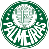
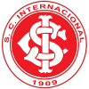

Palmeiras
Localização: São Paulo
Estádio: Allianz Parque
curiosidades: Fundado por imigrantes italianos.
Internacional
Localização: Porto Alegre
Estádio: Beira-Rio
curiosidades: Campeão de Tudo.
Fluminense
Localização: Rio de Janeiro
Estádio:Maracanã
curiosidades:O Fluminense tem uma santa padroeira:
Nossa Senhora da Glória.
Corinthians

Localização: São Paulo
Estádio:Neo Química Arena
curiosidades: O Corinthians viveu por quatro anos sem ter um escudo.
O primeiro foi desenhado apenas em 1914.